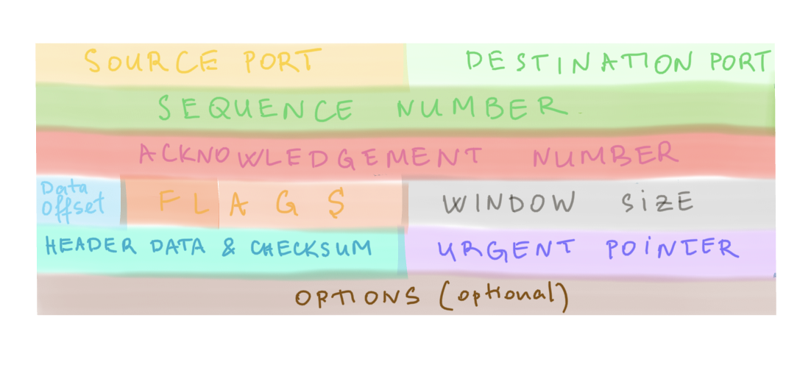
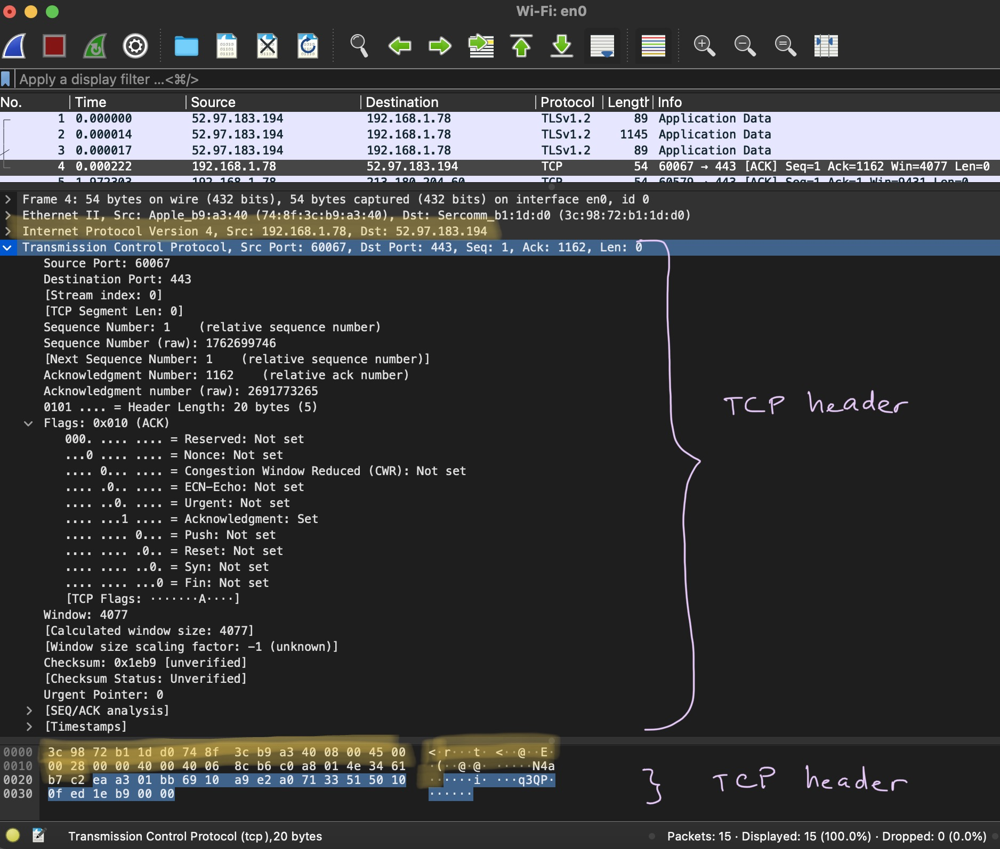
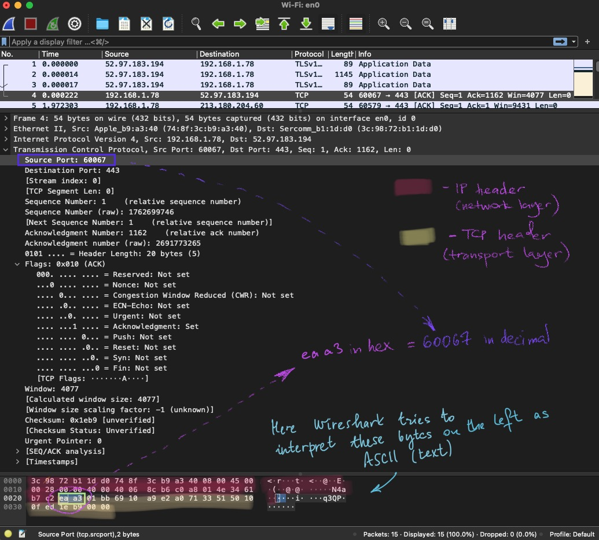
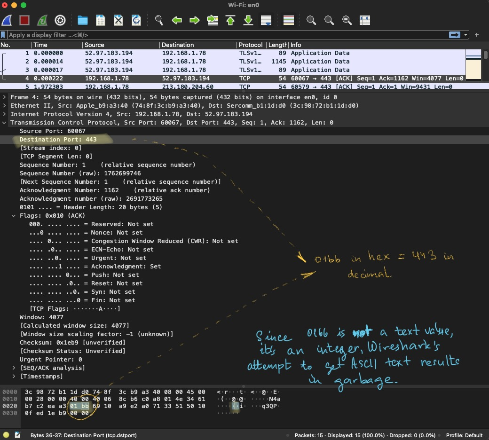

This article collects the basics of TCP protocol. Its friend UDP (transport layer protocol as well) is faster but less reliable.
Segment structure

Intro
This part is probably the easiest one to explain. One PC can communicate with many other PC simultaneously. To precise, different applications on the same PC can communicate with their servers or other PCs at the same time. How’s the NIC (network card of the PC) distinguishes between the packets? For example, the user is running Instagram 🌅 and Facebook at the same time. Facebook is reading feed from the server, while Instagram is posting a new photo. Here is when the port numbers are needed (the same purpose that the switch and hubs and router have their ports). PC assigns Instagram to port 1 and Facebook to port 2.
A few minutes have passed… ⏲️
Both applications receive a response. But how to decide, which one goes to which application?
The first message has port 1 written on the envelope ✉, and the second - port 2. So, when the application sends a request, it is asssigned a port. Roughly speaking, this port identifies this application when the response is received.
Some applications have their “favourite” ports, which are usually assigned to them (like, ssh is usually at 22, and ftp 21, and web 80 or 8080). Even some malware 🕷️ might have prerferences. But whatever the preferences are, a user can usually change them. Below is an example of a packet with a TCP segment expanded and the source port (the first screenshot) and the destination port (the second screenshot) highlighted both in raw bytes (the lowest part of the window) and interpreted by Wireshark (the middle part).
First, it’s recommented to read about data structures. A very good book that I’ve accidenatlly stumbled upon is Brian’s Carrier File System Forensic Analysis (see the Amazon link [3]). In a word, computers only see an almoust endless sequence of 1s and 0s. A data structure difines how a PC interprets this or that sequence of 1s or 0s. If you tell the PC that 01000001 is an integer, it will leave it like this and if you open this file in hex you’ll probably see 0x41. If you tell the PC that 01000001 is an ASCII letter, it will output A. If you, for example, feed it as a part of TCP header and tell that these are TCP flags, the PC will interpret these as ECN-Echo and FIN flags 🎏 set and etc (I hope you get the point). So, TCP header is just another data structure that tells the PC how it should interpret and use these particular sequence of bits (1s or 0s).
TCP is just one of the headers that you message ✉ sent over the network 🕸️ has to provide in order to be delievered. You can read about this in my article here. Its main purpose as pointed out above is to specify the port (i.e. application or process) that this message should be delievered to. Its secondary purpose it to ensure data integrity (more on that below). I’ve marked the TCP header on the screenshot below with purple curly brackets. The upper curly bracket shows the TCP header after being enterpreted by Wireshark and the below one (highlighted in blue as well) - raw bytes (before being interpreted by Wireshark): ea a3 01 bb 69 10 a9 e2 a0 71 33 51 50 10 0f ed 1e b9 00 00. Yes, that’s it, 20 bytes is the length of a TCP header (if an optional field Options is not filled out).

Source Port
The first two bytes are eaa3. These bytes are to be interpreted as a decimal value (60067) and stand for the source port. You can use a converter online (for example, here). Now check the Source port: field value (bytes as they were interpreted by Wireshark) on the screenshot below - 60067 as well! Amazing 🤩!

Note, that on the lower part of the window there are some letters t, q3QP etc. They don’t make sense, do they? Well, they should not. Wireshark attempts to interpret these bytes as ASCII characters (text). Since this is a TCP header and not text, the result is total garbage. You might ask why Wireshark is doing that? Well, the reason is probably because on other layers this is handy and was more difficult to turn it off for this field. Besides, who know, may there might be some covert channel there… . But I’m getting off the topic here.
Destination Port
Now, let’s take the next 2 bytes: 01bb. Let’s use the same hex-to-decimal converter here to figure oyt the value - 443. Check against the Wireshark’s interpretation below (value highlighted in yellow):

Bingo 🎉 !
Sequence number
The next four bytes are a bit harder to explain, but I will try 😊. As the paragraph’s title states, we are going to talk about a sequence number.
Acknowledgement number
TCP handshake
References
[1] TCP split-handshake attack, pdf document
[2] RFC 793 about TCP protocol and TCP handshake
[3] File System Forensic Analysis 1st Edition by Brian Carrier (Author)